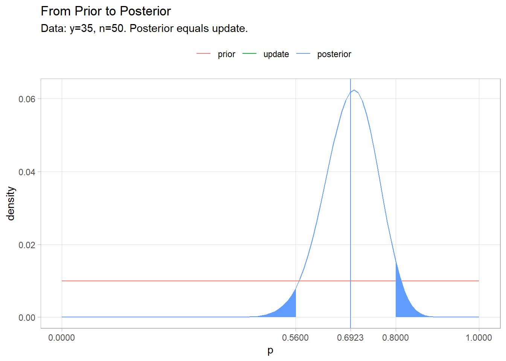
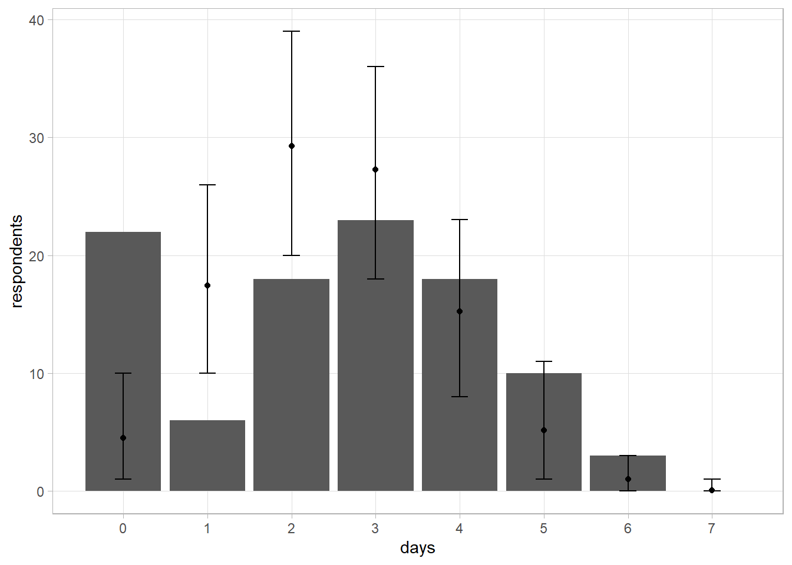
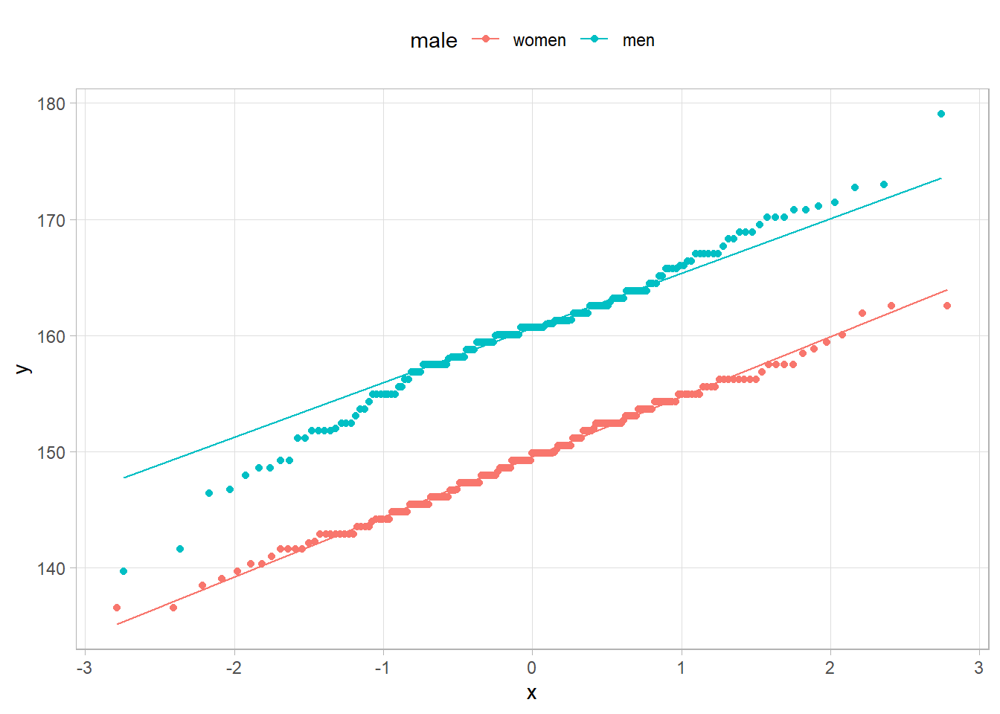
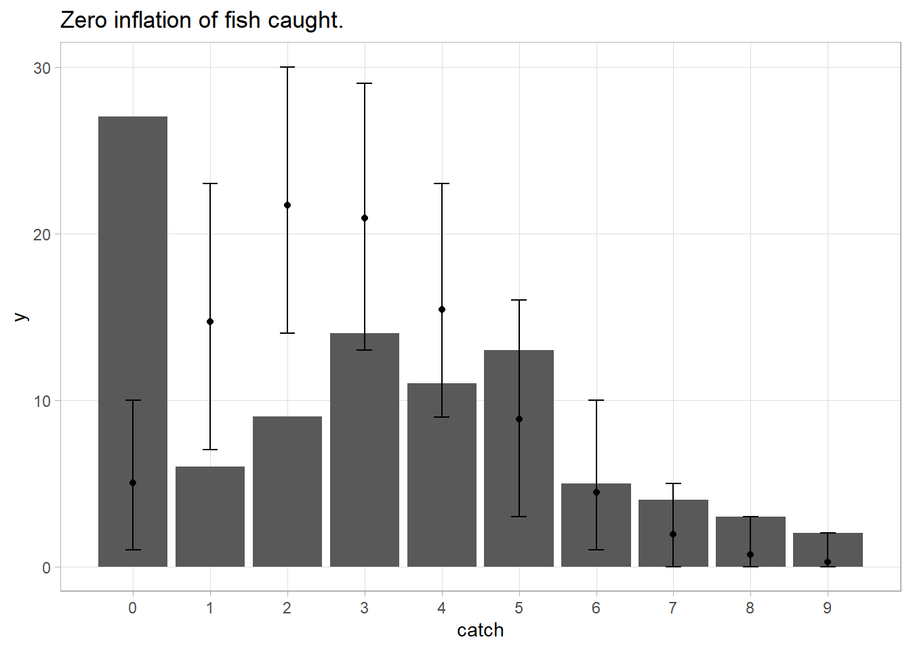

3.7 Zero-Inflation and Latent Variables
Suppose 100 persons report the number of days per week they consume alcohol (0 - 7). What is the posterior estimated probability of a person having a drink on any given day? The figure below shows a likely distribution. The number of drinking days will fall into binomial distribution if they drink at all. However, many will be non-drinkers. This phenomena is common and is called zero-inflation.
days <- 0:7
respondents <- c(22, 6, 18, 23, 18, 10, 3, 0)
tibble(days, respondents) %>%
ggplot(aes(x = days, y = respondents)) +
geom_col() +
labs(title = "Drinking Days Have Binomial Dist., Except for Zero Days")
Use the data to estimate the binomial \(p\) parameter. Using the \(\text{Beta}(1, 1)\) prior, the posterior would be \(\text{Beta}(252, 450)\).
# Actual drinking days per week
(drinking_days <- sum(days * respondents))
## [1] 251
# Possible drinking days per week
(n <- 7 * 100)
## [1] 700
# Beta posterior
a <- 1 + drinking_days
b <- 1 + (n - drinking_days)
# Posterior mean and 95% CI.
a / (a + b)
## [1] 0.3589744
qbeta(c(.025, .975), a, b)
## [1] 0.3239070 0.3948028Calculate the predicted count for each day level (0 - 7). The predictive distribution of \(\tilde{y}\) is \(f(\tilde{y}|y) = \int f(\tilde{y}|p) f(p|y) dp\). Instead of integrating for the solution, run a simulation. Sample a thousand \(p\)’s from the posterior beta distribution, then use them sample a thousand event counts from the binomial distribution.
set.seed(12345)
sampled_p <- rbeta(10^3, a, b)
# mean and 95% CI predicted number of drinking days.
y_tilde <- rbinom(10^3, 7, sampled_p)
mean(y_tilde)
## [1] 2.482
quantile(y_tilde, c(.025, .975))
## 2.5% 97.5%
## 0 5
# Mean and 95% CI for predicted number of respondents having [0,7] drinking days.
# For the 10^3 p's, simulate event count for 100 respondents drawing 7 items from
# a binomial distribution.
sims <- map(sampled_p, ~rbinom(100, 7, .))
# Count the number of times [0,7] comes up. Average this across the 10^3 experiments.
means <- map_dbl(days, function(x) map_int(sims, ~sum(. == x)) %>% mean())
lcl <- map_dbl(days, function(x) map_int(sims, ~sum(. == x)) %>% quantile(.025))
ucl <- map_dbl(days, function(x) map_int(sims, ~sum(. == x)) %>% quantile(.975))
tibble(days, respondents, means, lcl, ucl) %>%
ggplot(aes(x = days)) +
geom_col(aes(y = respondents)) +
geom_point(aes(y = means)) +
geom_errorbar(aes(ymin = lcl, ymax = ucl), width = .2) +
scale_x_continuous(breaks = 0:7)
This is obviously not good, but there is a way to deal with zero inflation. Let \(z_i = 1\) if respondent \(i\) drinks alcohol at all. Then \((x_i|z_i = 1, p) \sim \text{Bin}(7, p)\), otherwise \(P(x_i =0|z_i = 0) = 1\). Model the probability of \(z_i = 0\) with the Bernoulli distribution, \(z_i|\omega \sim \text{Bern}(\omega)\) where \(\omega \sim \text{Beta}(a_\omega, b_\omega)\). \(z_i\) is a latent variable, an unobserved attribute.
Implement a Gibbs Sampler with uniform priors for \(p \sim \text{Beta}(a = 1, b = 1)\) and \(\omega \sim \text{Beta}(a_\omega = 1, b_\omega = 1)\). Start with the assumption that if \(x_i = 0\) then \(z_i = 0\). For each respondent, if \(x_i > 0\) then \(z_i = 1\), otherwise
\[ P(z_i = 1| x_i = 0, p, \omega) = \frac{(1-p)^7 \omega}{(1-\omega) + (1-p)^7 \omega} \]
set.seed(12345)
# Days consuming alcohol last week [0-7] for 100 respondents.
x <- rep(0:7, respondents)
# Start with assumption that if they reported 0, they _never_ drink (x_i=0 -> z_i=0).
z <- as.numeric(x >= 1)
# Run 1,000 iterations.
ITER <- 10^3
sim_p <- numeric(ITER)
sim_omega <- numeric(ITER)
sim_z <- matrix(nrow = length(x), ncol = ITER)
# Gibbs sampler.
for(iter in 1:ITER) {
# Use uniform Beta(1,1) prior for whether or not the person is a drinker. Sample
# omega given the count of non-zero z's.
omega <- rbeta(1, 1 + sum(z), 1 + (length(z) - sum(z)))
# Sample p from beta distribution given the respondent count _when z=1_.
# Use vague Beta(1,1) prior for probability of drinking on any given day.
# Sample p given reported drinking days and number of people who are drinkers
# on each day.
p <- rbeta(1, 1 + sum(x), 1 + (7 * sum(z) - sum(x)))
# Updated probability that respondent is a drinker.
# P(z=1|x>0) = 1 or P(z=1|x=0, p, omega).
prob_z_eq_1 <-
as.numeric(x >= 1) * 1.0 +
as.numeric(x == 0) * ((1 - p)^7 * omega) / ((1 - omega) + ((1 - p)^7 * omega))
z <- rbinom(100, 1, prob_z_eq_1)
# update monitors
sim_p[iter] <- p
sim_omega[iter] <- omega
sim_z[, iter] <- z
}
# Estimated probability of being an alcohol drinker.
mean(sim_omega)## [1] 0.7863099## 2.5% 97.5%
## 0.7051111 0.8581847## [1] 0.4533135## 2.5% 97.5%
## 0.4121130 0.4949042# mean and 95% CI predicted number of [0,7] drinking days.
z_post_pred <- map(1:ITER, ~rbinom(100, 1, sim_omega))
x_post_pred <- map(1:ITER, ~rbinom(100, 7, sim_p))
# Override the probability with zero when z == 0.
x_post_pred <- map2(x_post_pred, z_post_pred, ~ if_else(.y == 0, 0, .x))
# Count the number of times [0,7] comes up. Average this across the 10^3 experiments.
means <- map_dbl(days, function(x) map_int(x_post_pred, ~sum(. == x)) %>% mean())
lcl <- map_dbl(days, function(x) map_int(x_post_pred, ~sum(. == x)) %>% quantile(.025))
ucl <- map_dbl(days, function(x) map_int(x_post_pred, ~sum(. == x)) %>% quantile(.975))
tibble(days, respondents, means, lcl, ucl) %>%
ggplot(aes(x = days)) +
geom_col(aes(y = respondents)) +
geom_point(aes(y = means)) +
geom_errorbar(aes(ymin = lcl, ymax = ucl), width = .2) +
scale_x_continuous(breaks = 0:7)
Let’s try another example of modeling with zero inflation. 94 tourists report how many fish they caught during their visit. Estimate the distribution of fish caught. Start with a vague prior, \(\lambda \sim \text{Gamma}(a = .1, b = .1)\). The posterior distribution of \(\lambda|y \sim \text{Gamma}(a + \sum_i{y_i}, b + n)\)
fish <- readr::read_csv("input/fish.csv", col_types = "i") %>%
filter(!is.na(catch))
y <- tibble(catch = 0:max(fish$catch)) %>%
left_join(fish %>% count(catch), by = join_by(catch)) %>%
replace_na(list(n = 0)) %>%
pull(n)
# Simulate 10^3 samples.
set.seed(12345)
# Vague priors for gamma(a, b).
a <- .01
b <- .01
# Sample gamma 10^3 times from the posterior distribution
sampled_lambda <- rgamma(10^3, a + sum(fish$catch), b + nrow(fish))
y_tilde <- rpois(10^3, sampled_lambda)
# mean and 95% CI predicted number of expected value of fish caught.
mean(y_tilde)## [1] 2.875## 2.5% 97.5%
## 0 6# mean and 95% CI predicted number of [0, 9] fish caught.
# For 10^3 lambdas, create 94 samples from Poisson dist.
sims <- map(sampled_lambda, ~rpois(nrow(fish), .))
# Count the number of times [0,10] comes up. Average this across the 10^3 experiments.
catch <- 0:max(fish$catch)
means <- map_dbl(catch, function(x) map_int(sims, ~sum(. == x)) %>% mean())
lcl <- map_dbl(catch, function(x) map_int(sims, ~sum(. == x)) %>% quantile(.025))
ucl <- map_dbl(catch, function(x) map_int(sims, ~sum(. == x)) %>% quantile(.975))
tibble(catch, y, means, lcl, ucl) %>%
ggplot(aes(x = catch)) +
geom_col(aes(y = y)) +
geom_point(aes(y = means)) +
geom_errorbar(aes(ymin = lcl, ymax = ucl), width = .2) +
scale_x_continuous(breaks = 0:10) +
labs(title = "Zero inflation of fish caught.")
This doesn’t look good. The probability of 27 people catching 0 fish when the expected number of fish is 2.9 is less than .001.
# probability of catch = 27 given lambda = 2.9 is <.001
(lambda_est <- (a + sum(fish$catch)) / (b + 94))## [1] 2.925327## [1] 1.064884e-12Add a binary latent variable to the model describing whether or not the person was fishing Assign a uniform prior to the probability that the person was fishing Derive posterior conditional distributions and construct a Gibbs sampler to estimate your model
set.seed(12345)
# Reported number of fish caught by 94 respondents.
x <- fish$catch
# Start with assumption that if they caught 0, they did not fish (x_i=0 -> z_i=0).
z <- as.numeric(x >= 1)
# Iterations to run.
ITER <- 10^3
sim_lambda <- numeric(ITER)
sim_omega <- numeric(ITER)
sim_z <- matrix(nrow = length(x), ncol = ITER)
# Gibbs sampler.
for(iter in 1:ITER) {
# Use uniform Beta(1,1) prior for whether or not the person fished. Sample
# omega given the count of non-zero z's.
omega <- rbeta(1, 1 + sum(z), 1 + (94 - sum(z)))
# Use vague Gamma(.01,.01) prior for number of fish caught. Sample lambda
# given reported catches and number of people who fished.
lambda <- rgamma(1, .01 + sum(x), .01 + sum(z))
# Updated probability that respondent fishes.
# E(z=1|x) = 1 or P(1|x=0, p, omega).
prob_x_eq_0 <- exp(-lambda) * lambda^0 / factorial(0)
prob_z_eq_1 <-
as.numeric(x >= 1) * 1.0 +
as.numeric(x == 0) * (prob_x_eq_0 * omega) / ((1 - omega) + (prob_x_eq_0 * omega))
z <- rbinom(length(x), 1, prob_z_eq_1)
# update monitors
sim_lambda[iter] <- lambda
sim_omega[iter] <- omega
sim_z[, iter] <- z
}
# Estimate of tourists who fished.
mean(sim_omega)
quantile(sim_omega, c(.025, .975))
# Of those who fished, the expected number caught.
mean(sim_lambda)
quantile(sim_lambda, c(.025, .975))
# mean and 95% CI predicted number of [0,9] fish caught.
z_post_pred <- map(1:ITER, ~rbinom(length(z), 1, sim_omega))
x_post_pred <- map(1:ITER, ~rpois(length(x), sim_lambda))
# Override the count with zero when z == 0.
x_post_pred <- map2(x_post_pred, z_post_pred, ~ if_else(.y == 0, 0, .x))
# Count the number of times [0,9] comes up. Average this across the 10^3 experiments.
means <- map_dbl(0:9, function(x) map_int(x_post_pred, ~sum(. == x)) %>% mean())
lcl <- map_dbl(0:9, function(x) map_int(x_post_pred, ~sum(. == x)) %>% quantile(.025))
ucl <- map_dbl(0:9, function(x) map_int(x_post_pred, ~sum(. == x)) %>% quantile(.975))
tibble(fish = 0:9, y, means, lcl, ucl) %>%
ggplot(aes(x = fish)) +
geom_col(aes(y = y)) +
geom_point(aes(y = means)) +
geom_errorbar(aes(ymin = lcl, ymax = ucl), width = .2) +
scale_x_continuous(breaks = 0:10)